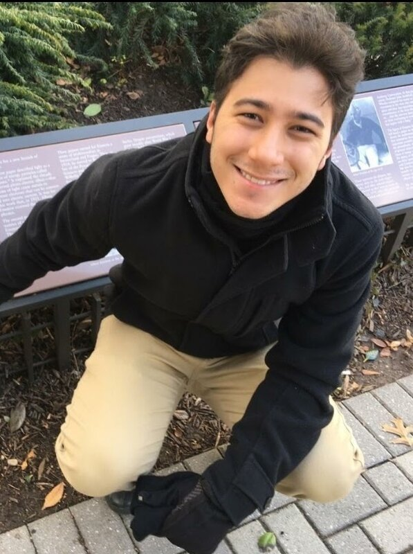
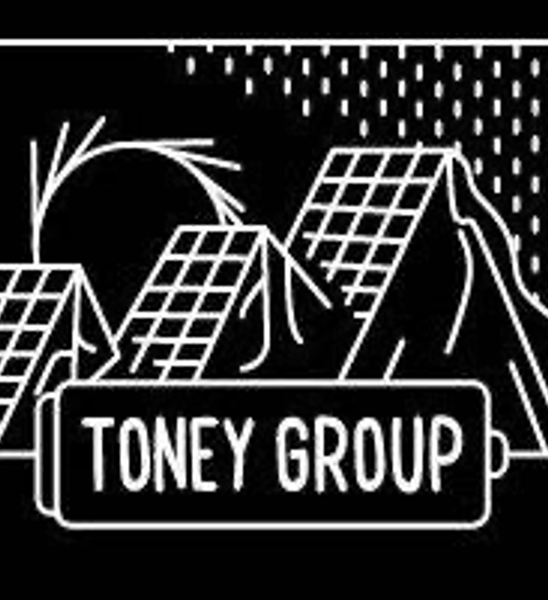
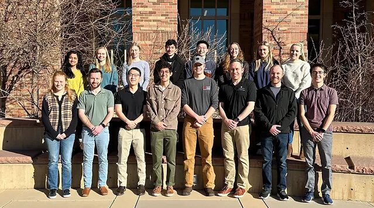
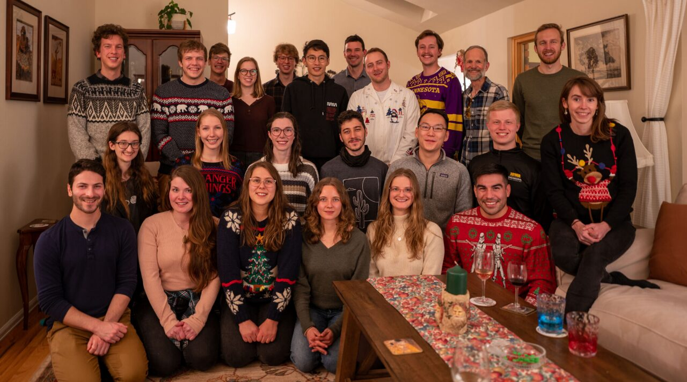

Rafael Ferreira de Menezes
Ph.D. candidate in Chemical Engineering at the University of Colorado Boulder, based in Washington, DC. I study what happens where an electrode meets an electrolyte, one atom at a time, and I check the simulations against operando X-ray experiments.
About me
I am a physicist by training and a battery scientist by practice. I grew up in Brasilia, studied physics at the University of Brasilia, and moved to Boulder in 2022 for a Ph.D. in chemical engineering. There I split my time between the Sprenger group, which does the simulations, and the Toney group, which takes the synchrotron beamtime. I now live in Washington, DC, and expect to defend in Spring 2027.
My work asks how cathodes, electrolytes, and the thin films between them evolve while a battery runs. I answer with quantum chemistry, classical and reactive molecular dynamics, and machine-learned interatomic potentials, and then test those answers with operando X-ray diffraction, reflectivity, and spectroscopy at the Advanced Photon Source and NSLS-II. The same combination reaches beyond batteries: to ices and minerals under planetary conditions, and to the power systems that keep a spacecraft alive. That is where I want to take it next.
Outside the lab I volunteer at the Smithsonian National Air and Space Museum, mentor students, learn languages of both the spoken and the programming kind, and meditate. I calculated the probability of understanding this bio after one read to be roughly 1/137, so please read it twice.
Research interests
Atomic-scale simulation of interfaces
DFT and coupled-cluster calculations, classical and reactive (ReaxFF) molecular dynamics, machine-learned potentials, and hybrid molecular dynamics/Monte Carlo sampling of speciation.
X-ray characterization
Operando and in situ synchrotron diffraction, reflectivity, and absorption spectroscopy to follow crystal structure, phase transitions, and oxidation states during cycling.
Planetary and space materials
Applying the same toolkit to ices, minerals, and electrochemical power systems for space missions, where the environments are extreme and the samples are scarce.
Now
Fall 2026. Writing the thesis, giving invited talks at the 2026 Batteries and Computational Materials Science Gordon Research Conferences, volunteering with K-8 visitors at the National Air and Space Museum, and looking for a postdoctoral position starting mid-2027.
Research groups
I hit the lab lottery: two groups at CU Boulder, one that codes and one that runs the beamline.
Sprenger group (RDI)
Rationally Designed Immunotherapeutics and Interfaces. Molecular simulation of interfaces, from proteins to electrodes, with Prof. Kayla G. Sprenger.

Toney group
Synchrotron X-ray scattering and spectroscopy of energy materials with Prof. Michael F. Toney, at the Advanced Photon Source and NSLS-II.

